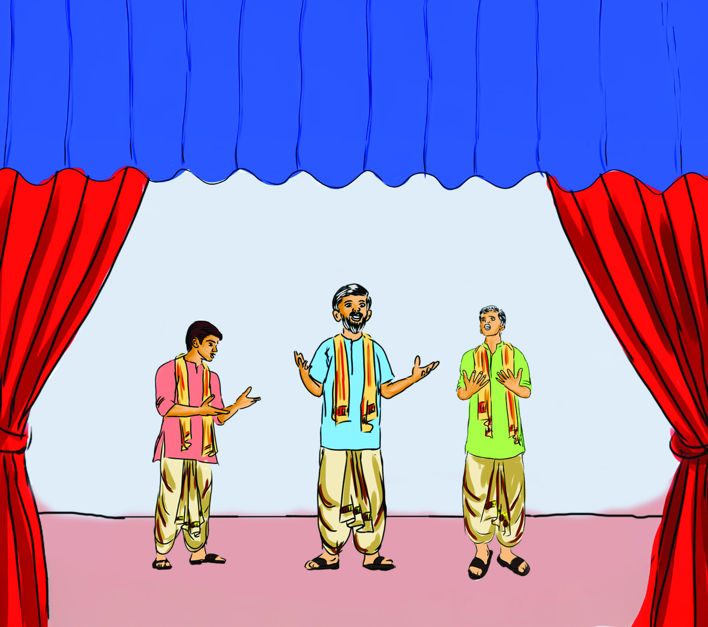
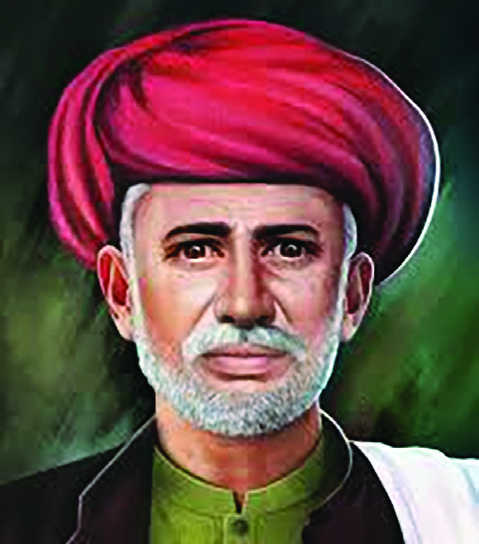

ദേശീീയ
പ്രസ്ഥാാനത്തിിന്റെź
ആവിിർഭാാവത്തിിലേേക്ക്്
2
യൂണിിറ്റ്്
നോ�ോബിിൻ മാാധബ്
ഗോuോലക്് ചന്ദർബസുു
സാധു ചരൺ
അതെ, നോോബിിൻ
പറഞ്ഞത് ശരിിയാാണ്്.
നാം വളരെെക്കാാലമാായിി
നിശബ്ദരാാണ്്. ഈ ചങ്ങലകൾ
പൊ�ൊട്ടിിച്ചെെăറിയാാൻ
നമ്മുുടെെ പൂർവികർ നമ്മളോ�ോട്
ആവശ്യപ്പെെƀടുന്നുു.
നമ്മുുടെെ സ്വാാ�തന്ത്ര്യയത്തിിനാായി,
ഭാാവി തലമുറകൾക്കാായിി
നമുുക്കൊ�ൊന്നിിച്ചു
പോ�ോരാാടാം�.
അച്ഛാാ, ഈ സ്വേ�േച്ഛാാധിിപത്യംംc
നമ്മൾ എത്രനാാൾ സഹിിക്കുംംc?
നീലംം മുതലാാളിമാാർ നമ്മെ�
സ്വവന്തംം മണ്ണിിൽ വെ�റും�ം
അടിമകളാാക്കിയിരിിക്കുന്നുു.
നമ്മുുടെെ അവകാാശങ്ങൾക്കാായിി
നാം ഉണർന്നുു പോ�ോരാാടേ�ണ്ടിി
യിരിിക്കുന്നുു.
എന്റെെź മകനേ, നമ്മുുടെെ കഷ്ടപ്പാാടുകൾ
വലുതാാണ്്. എന്നാാൽ നമ്മുുടെെ ഐക്യംംc
അതിനേക്കാാൾ വലുതാാണ്്. കർഷകർ
എന്ന നിലയിൽ മാാത്രമല്ല, ഒരു രാാഷ്ട്രംം എന്ന
നിലയിലുംംc നാം ഒരുമിച്ചുനിൽക്കേ�ണ്ട സമയംം
സമാാഗതമാായിിരിിക്കുന്നുു. നമ്മൾ ദുുർബലരല്ല,
നമുുക്ക് ചെ�റുത്തുനിൽക്കാാനുംംc നമ്മുുടെെ
അന്തസ്സ്് വീണ്ടെ�ടുുക്കാാനുംംc കഴിിയുംംc എന്ന് നാം
ലോ�ോകത്തിിന് കാാണിച്ചുകൊ�ൊടുക്കണംം
.
ചിിത്രംം 2.1 l
Page 27

Page 28


28
മുകളിൽ നൽകിയ സംംഭാാഷണംം ശ്രദ്ധിിച്ചല്ലോ�ോ. ബംംഗാാളി
സാാഹിിത്യകാാരനുംംc സാാമൂ
ൂഹിികപരിിഷ്കർത്താാവു
ുമാായ ദീനബന്ധുു
മിത്ര രചിിച്ച ‘നീൽ ദർപ്പൺ’ എന്ന നാാടകത്തിിലെ� ഭാാഗമാാണിിത്.
മുൻ അധ്യാ�ായത്തിിൽ നാം ചർച്ച ചെ�യ്ത നീലംം തോോോട്ടമുുടമകളുടെെ
ചൂഷണത്തിിനെെതിരെെയാാണ്് കഥാാപാാത്രങ്ങൾ സംംസാാ
രിിക്കുന്നത്്.
ചൂഷകർക്കെ�തിിരെെ ഇന്ത്യക്കാാർ ഒന്നിച്ചുനിൽക്കേ�ണ്ടതിിന്റെെź
ആവശ്യകത അവർ എടുത്തുപറയുന്നുുണ്ട്. ഈ സംംഭാാഷണത്തിിൽ
നിന്ന് എന്തൊ�ൊക്കെ�യാാണ്് മനസ്സിലാാക്കാാൻ കഴിിയുന്നത്്?
l വിദേ�ശാാധിിപത്യത്തിിനെെതിരെെ പോ�ോരാാടേ�ണ്ടതിിന്റെെź ആവശ്യകത
l സാാമ്പത്തിിക ചൂഷണത്തിിൽ നിന്നുുള്ള മോ�ോചനംം
l
സ്വാാ�തന്ത്ര്യംംc ലഭിക്കുന്നതിിനുമുമ്പ് ഇന്ത്യ നിരവധിി നാാട്ടുരാാജ്യയങ്ങ
ളാായി ഭിന്നിക്കപ്പെെƀട്ടിിരുന്നുു. ജാാതിി, മതംം, വേ�ഷംം, ഭാാഷ, സംംസ്കാാരംം
തുടങ്ങിയ എല്ലാാ മേ�ഖലകളിലുംംc വേ�ർതിരിിവ് നിലനിന്നിരുന്നുു.
എന്നാാൽ പത്തൊ�ൊമ്പതാം നൂറ്റാാണ്ടിിന്റെെź രണ്ടാം പകുതിയിൽ
ഇത്തരംം
ഭിന്നത
കൾക്കെ�ല്ലാാമപ്പുറംം ഇന്ത്യക്കാാർക്കിടയിിൽ
ഒരു ഐക്യബോ�ോധംം രൂപപ്പെെƀട്ടു. ശക്തമാായ ബ്രിിട്ടീഷ് വിരുദ്ധ
മനോോഭാാവമാായിിരുന്നുു ഇന്ത്യൻ ജനതയു
ുടെെ ഐക്യബോ�ോധത്തിിന്റെെź
അടിത്തറ. ഈ ഐക്യബോ�ോധത്തെ�യാാണ്് ദേ�ശീീയത എന്നതുു
കൊ�ൊണ്ട്് അർഥമാാക്കുുന്നത്്. ഇന്ത്യൻ ദേ�ശീീയത ശക്തമാാകുന്നതിി
നിടയാാക്കിിയ സാാഹ
ചര്യങ്ങൾ എന്തൊ�ൊക്കെ�യാാണെ�ന്ന്് നമുുക്കു
പരിിശോ�ോധിിക്കാം.
സാമ്പത്തിികനയം
ഇന്ത്യയിലെ� വിവിധ നാാട്ടുരാാജ്യയങ്ങളെ� ബ്രിിട്ടീഷുകാാർ
പിടിച്ചെെăടുത്തതി
ിനെെക്കുറിച്ചുംംc
അവർ
നടപ്പിലാാക്കിയ
സാാമ്പത്തിികനയങ്ങളെ�ക്കുുറിച്ചുംംc മുൻ ക്ലാാസുുകളിൽ ചർച്ച
ചെ�യ്തിരുന്നല്ലോ�ോ. ബ്രിിട്ടീഷുകാാരുടെെ വ്യവസാായ
ങ്ങൾക്ക് ആവശ്യ
മാായ അസംംസ്കൃതവസ്തുുക്കൾ ശേ�ഖരിിക്കുന്ന കോ�ോളനിയാായുംംc
ബ്രിിട്ടീഷ് ഉൽപന്നങ്ങൾ വിറ്റഴിിക്കുന്ന ഒരു കമ്പോ�ോളമാായുംംc
ഇന്ത്യ മാാറി. സാാമ്പത്തിികചൂഷണമാായിിരുന്നുു ബ്രിിട്ടീഷുകാാരുടെെ
ലക്ഷ്യംംc. ഇതിനാായി അവർ സ്വീീ�കരിിച്ച നയങ്ങൾ ഇന്ത്യയിൽ
തൊൊഴിിലില്ലാായ്്മയ്ക്കുംംc ദാാരിിദ്ര്യയത്തിിനുംംc കാാരണ
മാായിി. തൽഫലമാായിി
കർഷകർ, കൈൈവേ�ലക്കാാർ, ചെ�റുകിട കച്ചവടക്കാാർ,
ഗോ�ോത്രവിഭാാഗക്കാാർ തുടങ്ങിയ വിവിധ വിഭാാഗങ്ങൾ ബ്രിിട്ടീഷു
കാാർക്കെ�തിിരെെ പോ�ോരാാട്ടംം ആരംംഭിച്ചു. ബ്രിിട്ടീഷുകാാരുടെെ സാാമ്പ
ത്തിികചൂഷണത്തെ�പ്പറ്റി വിശദമാായ പഠനംം നടത്തിിയത്്
ദാാദാാഭാായിി നവറോ�ോജി, ആർ.സി. ദത്ത്, മഹാാദേ�വ്് ഗോ�ോവിന്ദ
റാാനഡേ തുടങ്ങിയവരാാണ്്. ഇന്ത്യൻ ദേ�ശീീയപ്രസ്ഥാാനത്തിിന്റെെź
ആദ്യകാാല നേതാാക്കളാായി
ിരുന്നുു ഇവർ.
‘ഇന്ത്യയയുുടെെ വന്ദ്യയ
വയോ�ോധിികൻ’
(Grand Old Man of India)
എന്നറിിയ
പ്പെെƀടുന്ന ദാാദാാഭാായ്്
നവറോ�ോജിിയുുടെെ
പുുസ്തകമാാണ്് ‘പോ�ോവർട്ടിി
ആൻഡ്് അൺബ്രിിട്ടീഷ്്
റൂൾ ഇൻ ഇന്ത്യയ’.
ബ്രിിട്ടീഷുകാാർ ഇന്ത്യയയുുടെെ
സമ്പത്ത്് ചോ�ോർത്തി
ക്കൊÚൊണ്ടുുപോ�ോകുന്നുവെ�ന്ന
തന്റെെź നിരീീക്ഷണം
(ചോ�ോർച്ചാാ സിദ്ധാാന്തംം -
Drain Theory) അദ്ദേŔഹംം
ഈ പുുസ്തകത്തിൽ
അവതരിപ്പിച്ചു. ബ്രിിട്ടീഷ്്
ഭരണത്തി
ിന്റെെź സാാമ്പത്തിക
പ്രത്യാാ�ഘാാതങ്ങൾ ചർച്ചാാ
വിഷയമാാക്കുന്നതിന്
ഇതിലൂൂടെെ സാാധിിച്ചു.
ഇന്ത്യയയുുടെെ
ഇന്ത്യയയുുടെെ
വന്ദ്യയവയോ�ോധിികൻ
വന്ദ്യയവയോ�ോധിികൻ
ചിിത്രംം 2.2 l ദാാദാാഭാായ്് നവറോ�ോജിി
Page 29

29
ദേശീീയപ്രസ്ഥാാനത്തിിന്റെź
ആവിിർഭാാവത്തിിലേേക്ക്്
പാാശ്ചാാത്യയവിിദ്യാ�ാഭ്യാ�ാസംം
പത്തൊĹൊമ്പതാംം നൂൂറ്റാാണ്ടിിന്റെź ആരംംഭത്തിലാാണ്് ഇന്ത്യയയിിൽ
ആധുുനിക വിിദ്യാ�ാഭ്യാ�ാസംം പ്രചരിച്ചത്. ബ്രിിട്ടീീഷുുകാാരുടെെ മേന്മയെ�
ഉയർത്തിക്കാാണിിക്കാാനുംം� ഇന്ത്യയക്കാാരെെ സാംംസ്കാാരിികമാായിി തങ്ങൾക്കു
വിിധേ�യരാാക്കാാനുംം� തങ്ങളോോട് അനുഭാാവമുള്ള ഒരു വിിഭാാഗംം ഇന്ത്യയക്കാാരെെ
വാാർത്തെĹടുക്കാാനുുമാാണ്് ബ്രിിട്ടീീഷുുകാാർ ഇംഗ്ലീീഷ് വിിദ്യാ�ാഭ്യാ�ാസംം
പ്രചരിപ്പിിച്ചത്. എന്നാാൽ ഇംഗ്ലീീഷ് വിിദ്യാ�ാഭ്യാ�ാസംം ലഭിിച്ച ഇന്ത്യയക്കാാർ
ജനാാധിപത്യംം�, സ്വാ�തന്ത്ര്യംം�, സ്ഥിിതിസമത്വംം�, തുല്യനീതി, ശാാസ്ത്രബോോധംം,
പൗരാാവകാാശം എന്നിവയെ�ക്കു
ുറിിച്ച് അവബോോധമുുള്ളവരാായിി മാാറിി.
പുതിയ ആശയങ്ങൾ പരിചയപ്പെ�ട്ട ഇന്ത്യയക്കാാർ തങ്ങളുടെെ രാാജ്യം�ം
എങ്ങനെ� ബ്രിിട്ടന്റെź കീഴിിലാായിി എന്നു ചിന്തിച്ചു. ബ്രിിട്ടീീഷ് ആധിപത്യംം�
അവസാാനിിപ്പിിക്കേ�ണ്ടതിിന്റെź ആവശ്യകതയെ�പ്പറ്റിി അവർ നിരന്തരംം
സംംസാാരിച്ചു. രാാജ്യത്തിന്റെź വിിവിിധ പ്രദേ�ശങ്ങളിൽനിന്ന് വരുുന്നവർക്ക്
ആശയ
കൈൈമാാറ്റത്തിനുള്ള പൊ�ൊതുഭാാഷയാായിി ഇംഗ്ലീീഷ് മാാറിി.
രാാജ്യത്തിന്റെź സാാമ്പത്തിക, സാാമൂഹിിക ദൗ�ർബല്യങ്ങൾ തിരിച്ചറിി
യുന്നതിിന് പാാശ്ചാാത്യയവിിദ്യാ�ാഭ്യാ�ാസംം ഇന്ത്യയക്കാാരെെ സഹാായിിച്ചു. ഇത്
ദേ�ശീീയതയുുടെെ ആവിിർഭാാവത്തിന് വഴിിതെ�ളി
ിച്ചു.
പാാശ്ചാാത്യയവിിദ്യാ�ാഭ്യാ�ാസംം ഇന്ത്യയക്കാാരിിൽ ദേ�ശീീയത
വളർത്തുുന്നതിൽ എത്രമാാത്രം സഹാായകമാായി ?
ചർച്ച ചെ�യ്ത്് കുറിിപ്പ്് തയ്യാാറാക്കുക.
സാഹിിത്യയവും� പത്രങ്ങളും�ം
ഇന്ത്യയയിിൽ ദേ�ശീീയത പ്രചരിപ്പിിക്കുന്നതിിൽ സാാഹിിത്യകൃതികളും�ം
പത്രങ്ങളും�ം പ്രധാാന പങ്കുുവഹിിച്ചു. ബ്രിിട്ടീീഷുുകാാർക്കെ�തിിരെെയു
ുള്ള
പ്രതിഷേ�ധംം സാാഹിിത്യത്തിൽ അലയടിിച്ചു. രാാജ്യത്തിന്റെź വിിവിിധ
ഭാാഗങ്ങളിൽ ജനങ്ങൾ നേ�രിിടുന്ന ദുരിതങ്ങളും�ം അവഗണനയുംം�
ചൂഷണവുുമൊൊൊക്കെ� സാാഹിിത്യകൃതികളിൽ പ്രതിപാാദ്യവിിഷയങ്ങളാായിി
മാാറിി. അക്കാാലത്തെĹ പ്രമുഖ എഴുത്തുകാാരാായ ദീനബ
ന്ധുുമിത്ര,
ബങ്കിംം�ചന്ദ്ര ചാാറ്റർജി, രബീ
ീന്ദ്രനാാഥ ടാാഗോ�ോർ, വള്ളത്തോĹോൾ നാാരാായണ
മേനോ�ോൻ, സുബ്രഹ്മണ്യ ഭാാരതി മുതലാായവരുുടെെ കൃതികൾ ജനങ്ങളിൽ
ദേ�ശീീയബോോധംം വളർത്തുന്നതിിൽ പ്രധാാന പങ്കുുവഹിിച്ചു.
പ്രധാാന ദേ�ശീീയ സാഹിിത്യയകാാരർ
ഭാാഷ
l ബങ്കിംം�ചന്ദ്ര ചാാറ്റർജി
l രബീീന്ദ്രനാാഥ ടാാഗോ�ോർ
l ബംഗാാളി
l ലക്ഷ്്മിനാാഥ് ബസ്് ബെറുവ
l ആസാാമീസ്
l വിിഷ്ണുുശാാസ്ത്രി ചിപ്ലങ്കർ
l മറാാത്തി
ചിത്രം 2.4 l
ആർ.സി. ദത്ത്
്
ചിത്രം 2.3 l
മഹാാദേ�വ്് ഗോuോവിിന്ദ റാനഡേേ
Page 30

30
l സുുബ്രഹ്മണ്യ ഭാാരതിി
l തമിിഴ്
l ഭാാരതേന്ദു ഹരിിശ്ചന്ദ്ര
l പ്രേം�ംചന്ദ്
l ഹിിന്ദി
l അൾത്താാഫ്
് ഹുസൈൈൻ ഹാാലി
l ഉർദുു
l വള്ളത്തോ�ോൾ നാാരാായണ മേ�നോോൻ
l മലയാാളംം
ഇംംഗ്ലീീഷിലുംംc പ്രാാദേ�ശിികഭാാഷകളിലുമാായിി നിരവധിി പത്രങ്ങൾ
അക്കാാലത്ത് നിലവിൽവന്നുു. ഇന്ത്യൻ പത്രപ്രവർത്തനത്തിിന്
തുടക്കംം കുറിച്ചത് സാാമൂ
ൂഹിികപരിിഷ്കർത്താാവാായ
രാാജാാ റാം�മോ�ോഹൻ
റോ�ോയിയാാണ്്. അദ്ദേŔഹംം ആരംംഭിച്ച പത്രങ്ങളാാണ്് ബംംഗാാളി ഭാാഷയിലെ�
സംംബാാദ്
് കൗമുദിയുംംc, പേ�ർഷ്യൻ ഭാാഷയിലെ� മിറാാത്-ഉൾ-അക്ബറും�ം.
ബ്രിിട്ടീഷ് നയങ്ങളെ� വിമർശിക്കാാനുംംc അവയ്ക്കെ�തിിരെെ പ്രതികരിിക്കാാനുംംc
ചൂഷണങ്ങൾക്കെ�തിിരാായ മനോോഭാാവംം വളർത്താാനുംംc ഇത്തരംം
വർത്തമാാന
പത്രങ്ങൾക്ക് സാാധിിച്ചു. ആധുനിക ആശയങ്ങളും�ം ദേ�ശീീയതയുംംc വളർ
ത്തുന്നതിിൽ നിർണ്ണാായ
ക പങ്കുുവഹിിച്ച പ്രധാാന പത്രങ്ങളാാണ്് ചുവടെെ
ചേ�ർക്കുന്നത്്.
പത്രം
ഭാാഷ
അമൃത് ബസാാർ പത്രിക
ബംംഗാാളി
ദി ഹിിന്ദു
ഇംംഗ്ലീീഷ്
ടൈംംcസ്് ഓഫ് ഇന്ത്യ
മാാതൃൃഭൂമി
മലയാാളംം
അൽഅമീൻ
ബ്രിിട്ടീഷുകാാർ വർത്തമാാനപത്രങ്ങളെ� അവർക്കെ�തിിരെെയുുള്ള പ്രചരണാായുു
ധമാായിി കാാണുകയുംംc അവയെ� നിയന്ത്രിക്കുന്നതിിനുള്ള നടപടികൾ
സ്വീീ�കരിിക്കുകയുംംc ചെ�യ്തു. ഇതിൽ പ്രധാാനപ്പെെƀട്ടതാാ
ണ്് ലിട്ടൺ പ്രഭു
നടപ്പിലാാക്കിയ നാാട്ടുഭാാഷാാപത്രനിയമംം (Vernacular Press Act). ഇത്തരംം
നിയമങ്ങൾക്കെ�തിിരെെ ഇന്ത്യൻ ജനത
ഒറ്റക്കെ�ട്ടാായി
ി നിലകൊ�ൊണ്ടുു.
‘ദേ�ശീീയത വളർത്തുന്നതിൽ പത്രമാാധ്യമങ്ങളുടെെ
സ്വാ�ധീീനം’ എന്ന വിഷയത്തിൽ ഒരു ലഘു
ുവിവരണം
ം
തയ്യാാറാാക്കുക.
സാമൂഹിികപരിിഷ്കരണ പ്രസ്ഥാാനങ്ങൾ
സമൂൂഹത്തിിൽ നിലനിന്നിരുന്ന അനാാചാാരങ്ങളെ�യുംംc അന്ധവിിശ്വാ�സങ്ങ
ളെ�യുംംc ഇല്ലാാതാാക്കേ�ണ്ടതിിന്റെെź ആവശ്യകത ബോ�ോധ്യപ്പെെƀടാാൻ ആധുനിക
വിദ്യാ�ാഭ്യാ�ാസംം സഹാായി
ിച്ചു. സാാമൂ
ൂഹിികപരിിഷ്കരണ
ത്തിിനു വേ�ണ്ടിി
ചിിത്രംം 2.7 l രബീീന്ദ്രനാാഥ ടാാഗോോuോർ
ചിിത്രംം 2.5 l ദീനബന്ധുുമിത്ര
ചിിത്രംം 2.8 l വള്ളത്തോ�ോൾ നാാരാായണ
മേ�നോ�ോൻ
ചിിത്രംം 2.9 l സുബ്രഹ്മണ്യഭാാരതിി
ചിിത്രംം 2.6 l ബങ്കിംം�ചന്ദ്ര ചാാറ്റർജിി
Page 31


31
ദേശീീയപ്രസ്ഥാാനത്തിിന്റെź
ആവിിർഭാാവത്തിിലേേക്ക്്
സതിി
നിർത്തലാാക്കുന്നതിിന്
മുഖ്യ പങ്കുുവഹിിച്ചു.
ചിിത്രംം 2.10 l രാാജാാ റാംDZമോ�ോഹൻ റോ�ോയ്
ജ്യോzോ�തിിറാാവു ഫൂൂലെെ
മഹാാരാാഷ്ട്രയിിൽ താാഴ്ന്നതെന്ന് കണക്കാാക്കപ്പെെƀട്ട ജാാതിികളിൽപ്പെെƀട്ടവരു
ടെെയുംംc സ്ത്രീകളുടെെയുംംc അവകാാശങ്ങൾക്കാായിി പോ�ോരാാടിയ സാാമൂ
ൂഹിിക
പരിിഷ്കർത്താാവാായിിരുന്നുു ജ്യോ�ോ�തിറാാവു ഫൂലെ�. സാാമൂ
ൂഹിികപരിിഷ്കരണ
പ്രവർത്തനങ്ങൾക്കാായിി ‘സത്യയശോ�ോധക്് സമാാജംം’ എന്ന സംംഘടനയ്ക്ക്്
അദ്ദേŔഹംം രൂപംം നൽകി. വിധവാാവിവാാഹംം നടപ്പിലാാക്കാാനുംംc, വിധവക
ളുടെെ മക്കൾക്ക് സംംരക്ഷണംം
നൽകുന്നതിിനുംംc ഈ സംംഘടന ശ്രമ
ങ്ങൾ നടത്തിിയിരുന്നുു. സ്ത്രീകൾ, ദളിിതർ എന്നിവർക്കാായിി നിരവധിി
വിദ്യാ�ാഭ്യാ�ാസ്ഥാ
ാപനങ്ങൾ അദ്ദേŔഹംം സ്ഥാാപിച്ചു. മഹാാരാാഷ്ട്രയിിലെ� ജനത
ആദരസൂ
ൂചകമാായിി അദ്ദേŔഹത്തെ� ‘മഹാാത്മ’ എന്നുു വിളിച്ചു. അദ്ദേŔഹത്തിിന്റെെź
എല്ലാാ പ്രവർത്തനങ്ങളിലുംംc ജീവിത പങ്കാാളി
ിയാായ സാാവി
ിത്രിബാായി
ഫൂലെ�യുംംc ഒപ്പമുണ്ടാായി
ിരുന്നുു. നിരവധിി പെ�ൺപള്ളിക്കൂടങ്ങളും�ം
നിശാാപാാഠശാാലകളും�ം സ്ഥാാപിച്ചുകൊ�ൊണ്ട്് സാാവി
ിത്രിബാായിയുംംc വിദ്യാ�ാഭ്യാ�ാസ
പ്രവർത്തനങ്ങളിൽ പങ്കാാളി
ിയാായിി.
ആധുനിക
വിദ്യാ�ാഭ്യാ�ാസത്തിിനാായി
നിരവധിി സ്കൂളുകൾ
ആരംംഭിച്ചു.
ബ്രഹ്മസമാാജംം എന്ന
സാാമൂ
ൂഹിികപരിിഷ്കരണ
പ്രസ്ഥാാനംം ആരംംഭിച്ചു.
പ്രവർത്തിിച്ച ഇന്ത്യയിലെ� ആദ്യകാാല പ്രവർത്തകരെെയുംംc അവരുടെെ
പ്രവർത്തനങ്ങളെ�യുംംc കുറിച്ച് നമുുക്ക് പരിിശോ�ോധിിക്കാം.
രാജാ റാംDZമോ�ോഹ
ൻ റോ�ോയ്്
ഇന്ത്യയിലുണ്ടാായ
സാാമൂ
ൂഹിികപരിിഷ്കരണ
ത്തിിന് തുടക്കംം കുറി
ച്ചത് രാാജാാ റാം�മോ�ോഹൻ റോ�ോയിയാാണ്്. 1772-ൽ ബംംഗാാളിൽ ജനിിച്ച
അദ്ദേŔഹത്തിിന് ഹിിന്ദു, ഇസ്്ലാം�, ക്രൈൈ
സ്തവ, ജൂത മതങ്ങളിൽ
അഗാാധമാായ ജ്ഞാാനംം ഉണ്ടാായി
ിരുന്നുു. ഒരു ബഹു
ുഭാാഷാാ പണ്ഡിിതനാാ
യിരുന്ന റോ�ോയിയെ� ഫ്രഞ്ചുുവിപ്ലവാാശയങ്ങൾ സ്വാാ�ധീീനിച്ചിരുന്നുു.
രാാജാാ റാം�മോ�ോഹൻ റോ�ോയിയുടെെ പ്രധാാന പ്രവർത്തനങ്ങൾ ചുവടെെ
ചേ�ർക്കുന്നുു.
സ്ത്രീകൾക്ക്
പൈൈതൃകസ്വവത്തിിൽ
അവകാാശമുണ്ടെ�ന്ന്്
വാാദിച്ചു.
വിഗ്രഹാാരാാധന,
ബഹു
ുദൈൈവവിശ്വാ�സംം,
എന്നിവയ്ക്കെ�തിിരെെ
നിലകൊ�ൊണ്ടുു.
ശൈൈശവ വിവാാഹംം,
ബഹു
ുഭാാര്യാ�ാത്വംംc
എന്നീ സാാമൂ
ൂഹിിക
തിന്മകൾക്കെ�തിിരെെ
പോ�ോരാാടി.
ചിിത്രംം 2.11 l
ജ്യോ�ോ�തിറാാവു ഫൂൂലെ�
Page 32

32
ചിിത്രംം 2.12 l
പണ്ഡിിത രമാാബാായിി
രാാജാാ റാംDZമോ�ോഹൻ റോ�ോയ്, ജ്യോ�ോ�തിറാാവു ഫൂൂലെ�, പണ്ഡിിത രമാാബാായിി
എന്നിവരുടെെ പ്രവർത്തനങ്ങൾ വിശകലനംം ചെ�യ്ത്്
കുറിിപ്പ് തയ്യാാറാാക്കുക.
സാമൂഹിികപരിിഷ്കരണ പ്രസ്ഥാാനങ്ങൾ
സ്ഥാാപകർ
പ്രാാർഥനാാസ
മാാജംം
ആത്മാാറാം� പാാണ്ഡുരംംഗ്
ആര്യസമാാജംം
സ്വാാ�മിി ദയാാനന്ദ സരസ്വവതി
ി
അലിഗഡ് പ്രസ്ഥാാനംം
സർ സയ്യിിദ് അഹ്മ്മദ്് ഖാാൻ
തിയോ�ോസഫി
ിക്കൽ സൊ�ൊസൈൈറ്റിി
മാാഡംം ബ്ലാാവിട്സ്കിി, കേ�ണൽ ഓൽകോ�ോട്ട്
രാാമകൃഷ്ണമിിഷൻ
സ്വാാ�മിി വിവേ�കാാന്ദൻ
ഹിിതകാാരിിണി സമാാജംം
വീരേ�ശലിംംcഗംം പന്തുലു
സ്വാാ�ഭിിമാാനപ്രസ്ഥാാനംം
ഇ.വി. രാാമസ്വാാ�മിി നാായ്ക്കർ
ശ്രീനാാരാായണധർമ പരിിപാാലനയോ�ോഗംം
ശ്രീനാാരാായണഗുുരു
സാാധു
ുജന പരിിപാാലനസംംഘംം
അയ്യങ്കാാളി
ി
ഇന്ത്യയിലെ� മറ്റു ചില പ്രധാാനപ്പെെƀട്ട സാാമൂ
ൂഹിികപരിിഷ്കരണ
പ്രസ്ഥാാനങ്ങ
ളെ�യുംംc സ്ഥാാപകരേ�യുംംc നമുുക്കു പരിിചയപ്പെെƀടാം�.
പണ്ഡിിത രമാാബായി
സാാമൂ
ൂഹിികപരിിഷ്കരണരംം
ഗത്തെ� സ്ത്രീസാാന്നിധ്യമാായിിരുന്നുു പണ്ഡിിത
രമാാബാായിി. കർണ്ണാാട
ക സ്വവദേ�ശി
ിയാായ രമാാബാായിി സംംസ്കൃതംം, മറാാത്തിി,
ബംംഗാാളി തുടങ്ങിയ ഭാാഷകൾ സ്വാാ�യത്തമാാക്കിി. സംംസ്കൃത സാാഹിിത്യത്തിിലുള്ള
അവഗാാഹംം പരിിഗണിച്ച് കൽക്കത്ത
സർവകലാാശാാലയിലെ� അധ്യാ�ാപകർ
രമാാബാായിിയെ� ‘പണ്ഡിിത’ എന്ന ബഹു
ുമതിി നൽകി ആദരിിച്ചു.
പണ്ഡിിത രമാാബാായിി ശൈൈശവവിവാാഹത്തിിനെെതിരെെ നിലകൊ�ൊള്ളുകയുംംc
വിധവകളുടെെയുംംc പെ�ൺകുട്ടിികളുടെെയുംംc വിദ്യാ�ാഭ്യാ�ാസത്തിിനുവേ�ണ്ടിി നിരവധിി
സ്കൂളുകൾ ആരംംഭിക്കുകയുംംc ചെ�യ്തു. ഇത്തരംം
പ്രവർത്തനങ്ങൾക്കാായിി
‘ആര്യ മഹിിളാാ സമാാജംം’ എന്ന സംംഘടന സ്ഥാാപിച്ചു. വിധവകളുടെെ
പുനരധിിവാാസത്തിിനാായി ‘ശാാരദാാ സദനംം
’ എന്ന അഭയകേ�
ന്ദ്രവുംംc സ്ത്രീകൾക്ക്
തൊൊഴിിൽ പരിിശീലനംം നൽകുന്നതിിനാായി ‘മുക്തി മിഷൻ’ എന്ന പദ്ധതിിയുംംc
ആരംംഭിച്ചു. 1889ൽ ബോം�ംബെ�യിിൽവച്ചു നടന്ന ഇന്ത്യൻ നാാഷണൽ
കോ�ോൺഗ്രസിന്റെെź സമ്മേ�
ളനത്തിിൽ അവർ പങ്കെ�ടുുത്തു.
Page 33

33
ദേശീീയപ്രസ്ഥാാനത്തിിന്റെź
ആവിിർഭാാവത്തിിലേേക്ക്്
സാാമൂ
ൂഹിികപരിിഷ്കരണ
പ്രവർത്തനങ്ങളിലൂടെെ ഇന്ത്യാാ�ക്കാാരിിൽ ആത്മവി
ശ്വാ�സംം വളർന്നുു. ഇത് ദേ�ശീീയതയുുടെെ വളർച്ചയ്ക്ക് കാാരണ
മാായിിത്തീർന്നുു.
ഗതാാഗതവുംം� വാർത്താവിിനിമയവുംം�
വ്യാാ�പാാരംം, വ്യവസാായംം
, സൈൈനിികാാവശ്യങ്ങൾ എന്നിവയ്ക്കുുവേ�ണ്ടിി
ബ്രിിട്ടീഷുകാാർ ഇന്ത്യയിൽ ഗതാാഗത വാാർത്താാവി
ിനിമയ സൗകര്യങ്ങൾ
വിപുലീകരിിച്ചു. റെെയിിൽവേ�യുംംc പോ�ോസ്റ്റൽ സംംവി
ിധാാനവുംംc
കമ്പിത്തപാാലുംംc അവർ ആരംംഭിച്ചു. ചരക്കുനീക്കംം എളുപ്പത്തിി
ലാാക്കുവാാൻ റോ�ോഡുഗതാാഗതംം മെെച്ചപ്പെെƀടുത്തിി. ഇന്ത്യയുടെെ എല്ലാാ
ഭാാഗങ്ങളിലേ�ക്കുംംc സഞ്ച
രിിക്കാാനുംംc ആശയവിിനിമയംം നടത്താാനുംംc
പരസ്പരംം മനസ്സിലാാക്കാാനുംംc ഈ സൗകര്യങ്ങൾ ഇന്ത്യക്കാാരെെ സഹാായി
ിച്ചു.
അതുവഴിി ദേ�ശീീയമനോോഭാാവംം രൂപപ്പെെƀടുകയുംംc ദേ�ശീീയ പ്രസ്ഥാാനംം
ശക്തിപ്പെെƀടുകയുംംc ചെ�യ്തു. ഏകീകൃത ഭരണ
സമ്പ്രദാായംം, നിയമവ്യയവസ്ഥ,
നാാണയവ്യവസ്ഥ തുടങ്ങിയവ നടപ്പിലാാക്കിയതുംംc ജനങ്ങൾക്കിടയിിൽ
ഐക്യബോ�ോധംം സൃഷ്ടിച്ചു.
‘ഇന്ത്യയൻ ദേ�ശീീയതയുുടെെ വളർച്ചയെ�
സഹാായിച്ച ഘടകങ്ങൾ’ എന്ന വിഷയത്തിൽ
സെ�മിിനാാർ പ്രബന്ധം തയ്യാാറാാക്കുക.
സൂചകങ്ങൾ
l സാാമ്പത്തിികനയംം
l പാാശ്ചാാത്യവിിദ്യാ�ാഭ്യാ�ാസംം
l സാാമൂ
ൂഹിികപരിിഷ്കരണ
പ്രസ്ഥാാനങ്ങൾ
l ഗതാാഗതവുംംc വാാർത്താാവി
ിനിമയവുംംc
l സാാഹിിത്യവുംംc പത്രങ്ങളും�ം
രാഷ്ട്രീീയസംഘടനകൾ രൂപംകൊ�ൊ
ള്ളുുന്നുു
ബ്രിിട്ടീഷുകാാർക്കെ�തിിരെെ ജനങ്ങളെ� ഒറ്റക്കെ�ട്ടാായിി അണിനിരത്തുന്നതിിന് സംംഘടനകൾ രൂപീകരിി
ക്കണമെെന്ന
അഭിപ്രാായംം ഇന്ത്യയുടെെ വിവിധ ഭാാഗങ്ങളിൽ നിന്നുംംc ഉയർന്നുുവന്നുു. ഇതിന്റെെź
ഫലമാായിി പത്തൊ�ൊമ്പതാം നൂറ്റാാണ്ടിിന്റെെź രണ്ടാം പകുതിയിൽ പുതിയ രാാഷ്ട്രീയപ്രസ്ഥാാനങ്ങൾ
രൂപപ്പെെƀട്ടു. അവയിൽ ചിലത് ചുവടെെ നൽകുന്നുു.
ആദ്യകാല
രാഷ്ട്രീീയപ്രസ്ഥാാനങ്ങൾ
പ്രവർത്തന
കേ�ന്ദ്രംം
നേ�തൃത്വം� നൽകിയ
ദേശീീയ നേ�താാക്കൾ
ഇന്ത്യൻ അസോ�ോസിയേ�ഷൻ
കൽക്കട്ട
സുരേ�ന്ദ്രനാാഥ ബാാനർജി,
ആനന്ദമോ�ോഹൻ ബോ�ോസ്്
മദ്രാാസ്
് മഹാാജ
ൻസഭ
മദ്രാാസ്
്
എംം വീരരാാഘവാാചാാരിി,
ജി സുബ്രഹ്മണ്യ അയ്യർ,
ആനന്ദ ചാാർലു
ബോം�ംബെ� പ്രസിഡൻസി
അസോ�ോസിയേ�ഷൻ
ബോം�ംബെ�
ഫിറോ�ോസ്്ഷാാ മേ�ത്ത,
കെ�.ടി തെലാം�ഗ്,
ബദറുുദ്ദീൻ ത്യാാ�ബ്ജി
Page 34


34
ഈ സംംഘടനകൾക്കൊ�ൊന്നുംംc അഖിലേ�ന്ത്യാാ� സ്വവഭാാവമുണ്ടാായി
ിരുന്നില്ല.
ഇവയുടെെ പ്രവർത്തനംം
ചില പ്രവിശ്യകളിലുംംc പ്രദേ�ശങ്ങളിലുംംc മാാത്രമാായിി
ഒതുങ്ങിയിരുന്നുു. ധനിികരുടെെയുംംc മധ്യവർഗത്തിിന്റെെźയുംംc നേതൃത്വവത്തിിലുള്ള
ഇത്തരംം
സംംഘടനകൾക്ക് ബഹു
ുജനങ്ങളെ� രാാഷ്ട്രീയമാായിി ബോ�ോധവൽക്കരിി
ക്കാാൻ സാാധിിച്ചില്ല. ഈ സാാഹ
ചര്യത്തിിൽ ഒരു അഖിലേ�ന്ത്യാാ�സംംഘടന
രൂപീകരിിക്കേ�ണ്ട ആവശ്യകത ശക്തിപ്പെെƀട്ടു.
ആദ്യകാാല രാാഷ്ട്രീീയപ്രസ്ഥാാനങ്ങളുടെെ പരിിമിതികൾ
ചർച്ച ചെ�യ്ത്് പട്ടിികപ്പെെƀടുത്തുക.
ഇന്ത്യയൻ നാാഷണ
ൽ കോ�ോൺഗ്രസിന്റെെź രൂപീകരണവുുമാായിി ബന്ധപ്പെെƀട്ട് എന്തെ�ല്ലാംDZ
കാാര്യങ്ങളാാണ്് ഇതിൽ നിന്നുംം� കണ്ടെ�ത്താാൻ കഴിിയുുന്നത്?
l 1885-ലാാണ്് ഇന്ത്യൻ നാാഷണൽ കോ�ോൺഗ്രസിന് രൂപംം നൽകിയത്്.
l
l
1885 ഡിസംബർ 28 പകൽ 12 മണി
ി. ബോം�ംബെ�യിിലെ� ഗോോuോകുൽദാാസ് തേ�ജ്്പാാൽ
സംസ്കൃത കോ�ോളേ�ജിിലെ� വിശാാലമാായ മുറിിയിൽ ഒരു യോ�ോഗം നടക്കുന്നു. 72 പേ�ർ
അവിടെെ ഒത്തുകൂടിയിട്ടുണ്ട്. ഇന്ത്യയയിലെ� വിവിധ പ്രദേ�ശങ്ങളിൽ ചിില പ്രധാാന
സംഘടനകളുടെെ പ്രതിനിധിികളാായി പ്രവർത്തിച്ചവരാാണ്് അവർ. ഭാാഷകൊ�ൊണ്ടുംം�
മതവിശ്വാ�സം കൊ�ൊണ്ടുംം� സമൂഹത്തിൽ ആർജിിച്ചിരുന്ന അംഗീകാാരം കൊ�ൊണ്ടുംം�
വൈൈവിധ്യമാാർന്ന വ്യക്തിിത്വവമുള്ളവർ... സംഘാാടകരിൽ ഒരാാൾ ഇംഗ്ലീീഷുകാാരനാായ
അലൻ ഒക്ടേÜവിയൻ ഹ്യൂം�ം� ആയിരുന്നു. ഡബ്ലിിയുു.സി. ബാാനർജിി എന്ന അഭിഭാാഷ
കനാായിരുന്നു അന്നത്തെ� യോ�ോഗത്തിൽ അധ്യക്ഷത വഹിച്ചത്്.
കെ�.എസ്.ഐ.സി.എൽ - ദേ�ശീീയ സ്വാ�തന്ത്ര്യയസമരചരി
ിത്രംം കുട്ടിികൾക്ക്
ചിിത്രംം 2.13 l ഇന്ത്യയൻ നാാഷണ
ൽ കോ�ോൺഗ്രസിന്റെെź ആദ്യ സമ്മേƣളനത്തിൽ പങ്കെ�ടുുത്തവർ
അഖിിലേേന്ത്യാാ� സംഘടന രൂപം കൊ�ൊ
ള്ളുുന്നുു
ഇന്ത്യൻ നാാഷണൽ കോ�ോൺഗ്രസ്് എന്ന ദേ�ശീീയസംംഘടനയ്ക്ക്് തുടക്കംം
കുറിച്ച ചരിിത്രപ്രധാാനമാായ സമ്മേ�
ളനത്തെ�ക്കുുറിച്ചാാണ്് മുകളിൽ വിവരിിച്ചി
രിിക്കുന്നത്്.
Page 35


35
ദേശീീയപ്രസ്ഥാാനത്തിിന്റെź
ആവിിർഭാാവത്തിിലേേക്ക്്
ചിിത്രംം 2.14 l
അലൻ ഒക്ടേÜവിയൻ ഹ്യൂം�ം�
ചിിത്രംം 2.15 l
ഡബ്ല്യൂൂ�.സി. ബാാനർജിി
വിവിധ പ്രദേ�ശങ്ങളിൽ നിന്നുുള്ള സാാമൂ
ൂഹിിക-രാാഷ്ട്രീയ പ്രവർത്തകർക്കി
ടയിിൽ പൊ�ൊതു അഭിപ്രാായംം രൂപീകരിിക്കുക എന്നതാായി
ിരുന്നുു ഈ
സമ്മേ�
ളത്തിിന്റെെź പ്രധാാന ലക്ഷ്യംംc. ഇന്ത്യൻ നാാഷണൽ കോ�ോൺഗ്രസിന്റെെź
പ്രഖ്യാാ�പിത ലക്ഷ്യയങ്ങളാാണ്് ചുവടെെ നൽകിയിട്ടുള്ളത്.
l ഇന്ത്യയുടെെ വിവിധ ഭാാഗങ്ങളിലെ� രാാഷ്ട്രീയപ്രവർത്തകർക്കിടയിിൽ
സൗഹൃദബന്ധംം വളർത്തുക.
l ജാാതിിയുടെെയോ�ോ മതത്തിിന്റെെźയോ�ോ പ്രവിശ്യയുടെെയോ�ോ
വ്യത്യാാ�സമിില്ലാാതെ ദേ�ശീീയഐക്യബോ�ോധംം വളർത്തുകയുംംc
ഉറപ്പിക്കുകയുംംc ചെ�യ്യുുക.
l പൊ�ൊതു ആവശ്യങ്ങൾക്ക് രൂപംം നൽകുകയുംംc അവ ബ്രിിട്ടീഷ്
ഗവൺമെെന്റിന് മുമ്പാാകെ� അവതരിിപ്പിക്കുകയുംംc ചെ�യ്യുുക.
l രാാജ്യയത്ത് പൊ�ൊതു അഭിപ്രാായംം രൂപീകരിിക്കുകയുംംc ജനങ്ങളെ� സംംഘടി
പ്പിക്കുകയുംംc ചെ�യ്യുുക.
l അഖിലേ�ന്ത്യാാ� മത്സരപരീക്ഷകൾക്ക് ഇന്ത്യയിലുംംc കേ�ന്ദ്രങ്ങൾ
അനുവദിക്കുക.
എല്ലാാ വർഷവുംംc ഡിസംംബ
ർ മാാസത്തിിൽ ഇന്ത്യൻ നാാഷണൽ കോ�ോൺഗ്ര
സിന്റെെź വാാർഷികസമ്മേ�
ളനംം രാാജ്യയത്തിിന്റെെź വിവിധ ഭാാഗങ്ങളിൽ
നടത്തിിയിരുന്നുു. അക്കാാലത്തെ� പ്രധാാനപ്പെെƀട്ട നേതാാക്കളാായിരുന്നുു
ദാാദാാഭാായ്് നവറോ�ോജി, സുരേ�ന്ദ്രനാാഥ ബാാനർജി, ഫിറോ�ോസ്്ഷാാ മേ�ത്ത,
ബദറുുദ്ദീൻ ത്യാാ�ബ്ജി, ഗോ�ോപാാലകൃഷ്ണ ഗോ�ോഖലെ�, ബാാലഗംംഗാാധര തിലക്,
പി ആനന്ദ ചാാർലു, ആർ.സി. ദത്ത്, ആനന്ദമോ�ോഹൻ ബോ�ോസ്് എന്നിവർ.
ഇന്ത്യയൻ നാാഷണ
ൽ
കോ�ോൺഗ്രസിന്റെെź
അധ്യക്ഷനാായ
ആദ്യമലയാാളി
ി.
1897ലെ� അമരാാവതി
കോ�ോൺഗ്രസ്
സമ്മേƣളനത്തിലാാണ്്
ഇദ്ദേŔഹംം കോ�ോൺഗ്ര
സിന്റെെź അധ്യക്ഷപദവിി
അലങ്കരിിച്ചത്്.
സർ. സി.
ശങ്കരൻ നാായർ
ഇന്ത്യയൻ നാാഷണ
ൽ കോ�ോൺഗ്രസിന്റെെź ആദ്യകാാല
പ്രവർത്തനലക്ഷ്യങ്ങൾ ഇന്ത്യയയിൽ ദേ�ശീീയബോ�
ോധം
വളർത്താാൻ സഹാായകമാായിിരുന്നു. ചർച്ച ചെ�യ്യുുക.
വിിഭജനവുംം� ഭിന്നിപ്പിിക്കലുംം�
“ഐക്യ ബംഗാാൾ ഒരു ശക്തിിയാാണ്്. ബംഗാാൾ
വിഭജിിക്കപ്പെെƀട്ടാാൽ ശക്തിിക്ഷയമുുണ്ടാാകുംം� - കോ�ോൺഗ്രസ്
നേ�താാക്കന്മാാരുുടെെ തോ�ോന്നൽ ഇതാാണ്്. അവരുടെെ ആശങ്ക
പൂർണമാായുംം� ശരിിയാാണ്്. ബംഗാാൾ വിഭജിിക്കാാനുള്ള
പദ്ധതിികളുടെെ മേ�ന്മകളിലൊ�ൊന്ന്് ഇതുതന്നെ�യാാണ്്.
നമ്മുടെെ മുഖ്യയ ലക്ഷ്യങ്ങളിലൊ�ൊന്ന്് നമ്മുടെെ
ഭരണത്തി
ിന്റെെź എതിരാാളികളെ� ഭിന്നിപ്പിക്കുകയുംം�
അതുവഴിി എതിർക്കുന്ന സംഘടനയെ�
ദുർബലമാാക്കുകയുുമാാണ്്.”
- എച്ച്.എച്ച്. റിിസ്ലെ�
കെ�.എസ്.ഐ.സി.എൽ - ദേ�ശീീയ സ്വാ�തന്ത്ര്യയസമരചരി
ിത്രംം കുട്ടിികൾക്ക്
ചിിത്രംം 2.16 l
Page 36

36
വിഭജനംം
നിലവിൽ വന്ന 1905 ഒക്ടോോÜോബർ 16-ന് ബംംഗാാളിലുടനീളംം
ദുഃഃdഖാാചരണംം നടന്നുു. കൽക്കത്തയിിൽ ഹർത്താാൽ ആചരിിച്ചു. രബീ
ീന്ദ്രനാാഥ
ടാാഗോ�ോർ രചിിച്ച ‘അമർ സോ�ോണാാർ ബംംഗ്ല’ എന്ന ദേ�ശഭക്തിഗാാനവുംംc
ആലപിച്ചുകൊ�ൊണ്ട്് ജനങ്ങൾ തെരുവുകളിൽ സംംഘടിച്ചു. ഈ പ്രതിഷേ�ധ
ങ്ങൾ ഒരു വലിയ സമര
മാായിി മാാറി. ഇത് ‘സ്വവദേ�ശി
ിപ്രസ്ഥാാന’മെെന്ന്്
അറിയപ്പെെƀടുന്നുു. ഇന്ത്യൻ ദേ�ശീീയപ്രസ്ഥാാനത്തിിന് ശക്തമാായ ഒരു
കുതിച്ചുചാാട്ടമുണ്ടാായത്
് സ്വവദേ�ശി
ി പ്രസ്ഥാാനത്തോ�ോടുകൂടിയാാണ്്.
ഇന്ത്യൻ വസ്തുുക്കളുുടെെ ഉപയോ�ോഗവുംംc ബ്രിിട്ടീഷ് വസ്തുുക്കളുുടെെ ബഹിിഷ്കര
ണവുംംc ആയിരുന്നുു ഈ പ്രസ്ഥാാനത്തിിന്റെെź പ്രധാാന സമരരീ
ീതി. ‘സ്വാാ�ശ്രയംം’
എന്നതാായി
ിരുന്നുു സ്വവദേ�ശി
ിപ്രസ്ഥാാനത്തിിന്റെെź പ്രധാാന ആശയംം. സ്വവദേ�ശി
ി
വ്യവസാായ
ങ്ങളും�ം മറ്റ് സംംരംംഭ
ങ്ങളും�ം വിജയിിപ്പിക്കുക എന്നതാാണി
ിതിന്റെെź
അർഥംം. ബ്രിിട്ടീഷ് ഉൽപന്നങ്ങൾ ബഹിിഷ്കരിിക്കുകയുംംc അങ്ങനെെ
സർക്കാാരിിന് കച്ചവടത്തിിലൂടെെ ലഭിക്കുന്ന വരുമാാനംം ഇല്ലാാതാാക്കുക
യുമാായിിരുന്നുു സ്വവദേ�ശി
ി സമര
ത്തിിന്റെെź ലക്ഷ്യംംc. ഇതിന്റെെź ഭാാഗമാായിി,
l നിരവധിി തുണിമില്ലുകൾ, സോ�ോപ്പുനിർമ്മാാണശാാ
ലകൾ, തീപ്പെെƀട്ടിി
ഫാാക്ടറികൾ, കൈൈത്തറിി സ്ഥാാപനങ്ങൾ, ദേ�ശീീയബാാങ്കുുകൾ, ഇൻഷ്വവറ
ൻസ്് കമ്പനികൾ എന്നിവ ആരംംഭിച്ചു.
ബംഗാാൾ വിഭജനത്തിന് പിന്നിലെ� യഥാാർഥലക്ഷ്യംം� എന്താായി
ിരുന്നു?
l
ബംംഗാാൾ വിഭജന
ത്തിിന്റെെź ലക്ഷ്യംംc വിശദീകരിിച്ചുകൊ�ൊണ്ട്് ഇന്ത്യാാ�
ഗവൺമെെന്റിന്റെെź ആഭ്യന്തരസെ�ക്രട്ടറി
ിയാായിിരുന്ന റിസ്്ലെ� എഴുതിയ ഒരു
ഔദ്യോ�ോ�ഗികക്കുറിപ്പിലെ� വിവരണ
മാാണ്് നിങ്ങൾ മുകളിൽ വാായിച്ചത്.
കോ�ോൺഗ്രസിന്റെെź നേതൃത്വവത്തിിൽ നടക്കുുന്ന സമര
ങ്ങളെ� ദുുർബലപ്പെെƀടു
ത്താാൻ ബ്രിിട്ടീഷ് അധിികാാരിികൾ പലതരംം തന്ത്രങ്ങൾ ആവിഷ്ക
രിിച്ചു. അവയിൽ പ്രധാാനമാായിിരുന്നുു ബംംഗാാൾ വിഭജനംം
. ദേ�ശീീയ
പ്രസ്ഥാാനത്തിിന്റെെź ശക്തികേ�ന്ദ്രമാായ ബംംഗാാൾ പ്രവിശ്യയെ� രണ്ടാായി
ി
വിഭജിിക്കുക എന്നതാായി
ിരുന്നുു ലക്ഷ്യംംc. നിലവിലുള്ള ബംംഗാാൾ പ്രവിശ്യ
വിസ്തൃതമാാണെ�ന്നുംംc കാാര്യക്ഷമമാായ ഭരണനി
ിർവഹണ
ത്തിിന് വിഭജനംം
അനിവാാര്യമാാണെ�ന്നുുമാാണ്് ബ്രിിട്ടീഷ് വൈൈസ്രോോǟോയി ആയിരുന്ന കഴ്സൺ
പ്രഭു വാാദിച്ചത്.
ബംഗാൾ വിിഭജനംം
ബംംഗാാളിനെെ കിഴക്കൻ ബംംഗാാൾ, പടിഞ്ഞാാറൻ ബംംഗാാൾ
എന്നിങ്ങനെെ രണ്ടാായിി വിഭജിിച്ചു. കിഴക്കൻ ബംംഗാാൾ മുസ്ലിംംc
ഭൂരിിപക്ഷ പ്രദേ�ശവുംംc, പടിഞ്ഞാാറൻ ബംംഗാാൾ ഹിിന്ദു ഭൂരിിപക്ഷ
പ്രദേ�ശവുമാായിിരുന്നുു.
Page 37


37
ദേശീീയപ്രസ്ഥാാനത്തിിന്റെź
ആവിിർഭാാവത്തിിലേേക്ക്്
“കരുത്തിന്റെെź നാളുകളിൽ സ്വദേ�ശിി പ്രസ്ഥാാനം
നമ്മുുടെെ സാമൂഹിക ഗാർഹിക ജീീവിിതത്തിന്റെെź
മുഴുുവൻ പ്രതലത്തിനുംം� നിറം ചാർത്തി. ഇന്ത്യയയിൽ
നിർമ്മിച്ചെ�ടുക്കാാവുന്നതുപോ�ോലെ�യുുള്ള വിിദേ�ശ
വസ്തുുക്കൾ ഉൾപ്പെ�ട്ട വിിവാഹ സമ്മാനങ്ങൾ മടക്കി
നൽകപ്പെ�ട്ടുു. ദേ�വന്മാാർക്ക് നിവേ�ദ്യയമാായി വസ്തുുക്കൾ
സമർപ്പിക്കപ്പെ�ട്ട ചടങ്ങുകളിൽ കാർമ്മികത്വംം�
വഹി
ിക്കുവാൻ പുരോ�ോഹിിതർ പലപ്പോ�ോഴും�ം എതിർപ്പ്്
പ്രകടിപ്പിച്ചു. വിിദേ�ശ ഉപ്പോ�ോ, പഞ്ചസാരയോ�ോ
ഉപയോ�ോഗിിച്ച ആഘോvോഷവേ�ളകളിൽ പങ്കെെÿടുക്കാാൻ
അതിഥിികൾ വിിസമ്മതിിച്ചു.”
അവലംംബം : ബിിപൻ ചന്ദ്ര, ആധുുനിക ഇന്ത്യയ
ചിത്രം 2.17 l
സുരേ�ന്ദ്രനാഥ ബാനർജി
l ആചാാര്യ പി.സി. റോ�ോയ്് ആരംംഭിച്ച ബംഗാാൾ കെ�മിിക്കൽ സ്റ്റോǢോർ,
രബീ
ീന്ദ്രനാാഥ ടാാഗോ�ോർ തുടക്കമിിട്ട സ്വവദേ�ശിി സ്റ്റോǢോർ, വിി. ചിദംബരംം
പിള്ളയുടെെ നേ�തൃത്വവത്തിൽ ആരംംഭിച്ച സ്വവദേ�ശിി സ്റ്റീംം� നാാവിിഗേ�ഷ
ൻ
കമ്പനി, ജാം�ഷെ�
ഡ്്ജി ടാാറ്റ സ്ഥാാപി
ിച്ച സ്റ്റീൽ ഫാാക്ടറിി എന്നിവയുംം�
സ്വവദേ�ശിി സമരത്തിന്റെź ഭാാഗമാായിി രൂപംകൊ�ൊണ്ടവയാാ
ണ്്.
സുരേ�ന്ദ്രനാാഥ ബാാനർജി സ്വവദേ�ശിിപ്രസ്ഥാാനത്തെĹക്കുറിിച്ച് നൽകിയ
വിിവരണമാാ
ണ്് ചുവടെെ നൽകിയിിട്ടുള്ളത്.
ഇത്തരംം പ്രചാാരണ
പരിപാാടികൾ സ്വവദേ�ശിിപ്രസ്ഥാാനത്തി
ിന്റെź ആശയങ്ങ
ളെക്കുറിിച്ച് അവബോോധമുുണ്ടാാക്കുകയുംം� ഇന്ത്യയൻ ജനത
യിിൽ
വലിിയ സ്വാ�ധീീനം ചെ�ലുുത്തുകയുംം� ചെ�യ്തുു. ഇതിലൂടെെ ഇന്ത്യയയിിലെ�
സാാധാാരണ
ക്കാാരും�ം സ്ത്രീകളും�ം വിിദ്യാ�ാർഥികളും�ം ആദ്യയമാായിി ഒരു രാാഷ്ട്രീീയ
പ്രസ്ഥാാനത്തി
ിൽ പങ്കാാളി
ികളാായിി. ഈ പ്രസ്ഥാാനത്തി
ിന്റെź സ്വാ�ധീീനം
സാംംസ്കാാരിികം, വിിദ്യാ�ാഭ്യാ�ാസംം, സാാമ്പത്തികം, രാാഷ്ട്രീീയം എന്നീ മേഖല
കളിൽ അനുഭവപ്പെ�ട്ടുു.
ഇന്ത്യയൻ സ്വാ�തന്ത്ര്യയസമര
പ്രസ്ഥാാനം
ം ദേ�ശീീയതലത്തി
ിലേ�ക്ക്് വ്യാാ�പി
പ്പിിക്കാാനുംം� സ്വവദേ�ശിിയെ�ന്ന
പുതിയ സമരമാാ
ർഗംം സ്വാ�തന്ത്ര്യയസമര
ത്തിന് സംംഭാാവന ചെ�യ്യാാനുംം� സ്വവദേ�ശിിപ്രസ്ഥാാനത്തി
ിന് സാാധിച്ചു.
സ്വവദേ�ശിിപ്രസ്ഥാാനം
ം ദേ�ശീീയസമരത്തെĹ സാാധാാരണ
ക്കാാരിിലേ�ക്ക്് എത്തിച്ചു.
ഈ വിിവരണത്തി
ിൽ നിന്ന് സ്വവദേ�ശിി പ്രസ്ഥാാനവു
ുമാായിി ബന്ധപ്പെ�ട്ട്് കണ്ടെ�ത്താാൻ
കഴിിയുന്ന വസ്തുുതകൾ പട്ടികപ്പെ�ടുുത്തുക.
l വിിദേ�ശവ
സ്തുുക്കൾ ഉൾപ്പെ�ട്ട വിിവാാഹ
സമ്മാാനങ്ങൾ മടക്കിി നൽകപ്പെ�ട്ടുു.
l
Page 38


38
സ്വവദേ�ശി പ്രസ്ഥാാനത്തിന്റെെź
സന്ദേ�ശംം പ്രചരിിപ്പിക്കാാനുംം�
ജനങ്ങളെ� സംഘടിിപ്പി
ക്കാാനുമാായിി
പ്രവർത്തിച്ചിരുന്ന സന്നദ്ധ
സംഘടനകളാാണ്് സ്വവദേ�ശി
സമിതികൾ. അശ്വിി�നി
കുമാാർ ദത്ത്് രൂപീകരിച്ച
സ്വവദേ�ശി ബാാന്ധബ്
്
സമിതി ഇതിൽ
പ്രധാാനപ്പെെƀട്ടതാായി
ിരുന്നു.
l സന്നദ്ധ ഭടന്മാാർക്ക്
കാായിക പരിിശീീലനംം
നൽകുക.
l പകർച്ചവ്യാാ�ധിിയുംം�
മറ്റും�ംമൂലം ദുരിതമനുുഭവിി
ക്കുന്നവരെെ സഹാായിക്കുക.
l സ്വവദേ�ശി വിദ്യാ�ാലയങ്ങൾ
സ്ഥാാപിിക്കുക.
എന്നിവയാായിരുന്നു
പ്രധാാന ലക്ഷ്യങ്ങൾ.
സ്വദേശി
സമിിതിികൾ
ചിിത്രംം 2.18 l അശ്വവനികുമാാർ ദത്ത്്
‘സ്വവദേ�ശിപ്രസ്ഥാാനം ഇന്ത്യയൻ സ്വാ�തന്ത്ര്യയസമരത്തിൽ
ചെ�ലുുത്തിയ സ്വാ�ധീീനം’ എന്ന വിഷയത്തെ�ക്കു
ുറിിച്ച്
ഒരു സെ�മിിനാാർ പ്രബന്ധം തയ്യാാറാാക്കുക.
മിതവാാദികളും�ം തീവ്രദേശീീയവാദികളും�ം
ഇന്ത്യൻ നാാഷണൽ കോ�ോൺഗ്രസിന്റെെź പ്രവർത്തനരീ
ീതികളെ�
സംംബന്ധി
ിച്ച് നേതാാക്കൾക്കിടയിിൽ വ്യത്യസ്ത അഭിപ്രാായ
ങ്ങൾ
നിലനിന്നിരുന്നുു. ബ്രിിട്ടീഷുകാാർക്കെ�തിിരെെ പ്രത്യക്ഷസമര
ത്തിിന് ആദ്യകാാല നേതാാക്കൾ തയ്യാാറാായിരുന്നില്ല. അവർ മിത
വാാദികൾ എന്നാാണ്് അറിയപ്പെെƀട്ടത്്. ഫിറോ�ോസ്്ഷാാ മേ�ത്ത, ഗോ�ോപാാ
ലകൃഷ്ണ ഗോ�ോഖലെ�, ദാാദാാഭാായ്് നവറോ�ോജി എന്നിവരാായിരുന്നുു
അവരിിൽ പ്രധാാനികൾ. സമാാധാാനപരവുംംc രക്തരഹിിതവുമാായ
സമര
ങ്ങളിലൂടെെയുംംc യോ�ോഗങ്ങൾ, പ്രസംംഗങ്ങൾ, പ്രമേ�യങ്ങൾ
എന്നിവയിലൂടെെയുംംc അവർ തങ്ങളുടെെ ആശയങ്ങൾ പ്രചരിിപ്പിച്ചു.
മിതവാാദികളുടെെ ആശയങ്ങളോ�ോടും�ം പ്രവർത്തനങ്ങളോ�ോടും�ം
അതൃപ്തരാായ മറ്റൊ�ൊരു
ു വിഭാാഗംം കോ�ോൺഗ്രസിൽ ശക്തരാായി. അവർ
തീവ്രദേ�ശീീയവാാദികൾ എന്നറിിയപ്പെെƀട്ടു. ബാാല ഗംംഗാാധര തിലക്,
ബിിപിൻ ചന്ദ്രപാാൽ, ലാാലാാ ലജ്്പത് റാായി എന്നിവരാായിരുന്നുു
ഇതിൽ പ്രധാാനികൾ. ഇവരുടെെ പ്രവർത്തനരീ
ീതികൾ മിതവാാദി
കളുടേ�തിൽനിന്നുംംc തികച്ചുംംc വിഭിന്നമാായിിരുന്നുു. സ്വവദേ�ശി
ി,
ബഹിിഷ്കരണംം തുടങ്ങിയ വിപ്ലവകരമാായ പ്രവർത്തനരീ
ീതികൾ
സ്വീീ�കരിിച്ച ഇവർ ശക്തമാായ പ്രത്യക്ഷസമര
ത്തിിലൂടെെ മാാത്രമേ�
സ്വാാ�തന്ത്ര്യംംc നേടാാൻ കഴിിയൂ എന്ന് വാാദിച്ചു.
ഇന്ത്യയൻ ദേ�ശീീയപ്രസ്ഥാാനത്തിലെ� മിതവാാദികളു
ടേ�യുംം� തീവ്രദേ�ശീീയവാാദികളുടേ�യുംം� പ്രവർത്തന
രീീതികൾ താാരതമ്യം�ം ചെ�യ്ത്് കുറിിപ്പ് തയ്യാാറാാക്കുക.
മിതവാാദികളുടെെയുംംc തീവ്രദേ�ശീീയവാാദികളുടേ�യുംംc അഭിപ്രാായഭിി
ന്നതകൾ 1907-ലെ� സൂററ്റിലെ� കോ�ോൺഗ്രസ്് സമ്മേ�
ളനത്തിിൽവച്ച്
രൂക്ഷമാായിി. സമ്മേ�
ളനംം തുടർന്നുുകൊ�ൊണ്ടുുപോ�ോവുകപോ�ോലുംംc
അസാാധ്യയമാായിി. ഈ സംംഭ
വവികാാസങ്ങൾ കോ�ോൺഗ്രസിനെെ
പിളർപ്പിലേ�ക്ക്് നയിിച്ചു.
കോ�ോൺഗ്രസിലുണ്ടാായ
പിളർപ്പ് ബ്രിിട്ടീഷുകാാർ വളരെെ സമർഥ
മാായിി മുതലെ�ടുത്തു. ഭിന്നിപ്പിച്ചു ഭരിിക്കുക എന്ന നയംം കൂടുതൽ
ആഴത്തിിൽ പ്രാാവർത്തിികമാാക്കുുന്നതിിന് ഇതിലൂടെെ ബ്രിിട്ടീഷുകാാ
ർക്ക് സാാധിിച്ചു. ബ്രിിട്ടീഷുകാാർ തീവ്രദേ�ശീീയവാാദികൾക്കെ�തിിരെെ
കർശന നടപടികൾ ആരംംഭിച്ചു. നേതാാക്കളെ� അറസ്റ്റ് ചെ�യ്തു
Page 39


39
ദേശീീയപ്രസ്ഥാാനത്തിിന്റെź
ആവിിർഭാാവത്തിിലേേക്ക്്
ആഗാാഖാാന്റെെź നേ�തൃത്വവത്തിൽ ഒരു മുസ്ലീംം� പ്രതിനിധിി സംഘം
സിംം�ലയിിൽ വച്ച് മിന്റോോźോ പ്രഭുവിനെ� കാാണുകയുംം� ചിില
ആവശ്യങ്ങൾ മുന്നോ�ോട്ടുവയ്ക്കുുകയുംം� ചെ�യ്തുു. സർക്കാാരിന്റെെź
എല്ലാാ തലങ്ങളിലുംം� തങ്ങളുടെെ സമുദാായത്തിിന് പ്രത്യേ�േക
പ്രാാതിിനിധ്യംം� നൽകണമെെന്നുംം� മുസ്ലീീങ്ങൾക്ക് പ്രത്യേ�േക
നിയോ�ോജക മണ്ഡലങ്ങൾ വേ�ണമെെന്നുംം� അവർ ആവശ്യപ്പെെƀട്ടു.
ഈ ആവശ്യങ്ങളോ�ോടുള്ള വൈൈസ്രോോǟോയിയുുടെെ പ്രതികരണം
ം
തികച്ചുംം� അനുകൂലമാായിിരുന്നു. ഇത് മുസ്ലീീങ്ങൾക്കാായി
ഒരു പ്രത്യേ�േക രാാഷ്ട്രീീയ സംഘടന ആരംഭിക്കാാൻ
പ്രചോ�ോദനമാാകുകയുംം� 1906ൽ സർവേ�ന്ത്യാാ� മുസ്ലീംം�ലീീഗ്
സ്ഥാാപിിതമാാകുകയുംം� ചെ�യ്തുു.
സർവേേന്ത്യാാ� മുസ്ലീംംc ലീീഗിിന്റെź രൂപീീകരണംം
ജയിിലിലടച്ചു. ബാാലഗംംഗാാതര തിലക് ഉൾപ്പെെƀടെെ പലരെെയുംംc നാാടുകട
ത്തിി. പല നേതാാക്കളും�ം രാാഷ്ട്രീയംം ഉപേ�ക്ഷിിച്ചു.
ജനരോ�
ോഷംം തണുുപ്പിക്കുന്നതിിനുംംc കോ�ോൺഗ്രസിലെ� മിതവാാദികളെ�
സ്വാാ�ധീീനിക്കുന്നതിിനുംംc വേ�ണ്ടിി ചില ഭരണ
പരിിഷ്കാാരങ്ങൾ
ബ്രിിട്ടീഷുകാാർ നടപ്പിലാാക്കി. 1909ൽ നടപ്പിലാാക്കിയ മിന്റോോźോ-മോ�ോർലി
പരിിഷ്കാാരങ്ങൾ ഇത്തരത്തിിലുള്ളതാായിരുന്നുു. ഈ പരിിഷ്കാാരത്തിിലെ�
പ്രധാാന വ്യവസ്ഥകളാാണ്് മുസ്ലീങ്ങൾക്ക് പ്രത്യേേക നിയോ�ോജക മണ്ഡലംം
ഏർപ്പെെƀടുത്തുക, നിയമനിിർമ്മാാണസഭ
കളുടെെ പ്രവർത്തനങ്ങളും�ം
അധിികാാരങ്ങളും�ം വിപുലപ്പെെƀടുത്തുക തുടങ്ങിയവ.
ചിിത്രംം 2.19 l ഫിറോ�ോസ്ഷാാ മേ�ത്ത
ചിിത്രംം 2.20 l ഗോോuോപാാലകൃഷ്ണ ഗോോuോഖലെ�
സ്വവദേ�ശി പ്രസ്ഥാാനത്തിന് കൂടുതൽ കരുത്ത്് പകർന്നുകൊ�ൊണ്ട്് ബ്രിിട്ടീഷ്് ഭരണം
ം
അവസാാനിപ്പിക്കേÚണ്ടതിിന്റെെź ആവശ്യകത ഊന്നിപ്പറഞ്ഞ തീവ്രദേ�ശീീയനേ�താാക്കളാാണ്്
ലാാലാാ ലജ്്പത്്റാായി, ബാാല ഗംഗാാധര തിലക്്, ബിപിൻ ചന്ദ്രപാാൽ എന്നിവർ. ഇവർ
ലാാൽ–ബാാൽ-പാാൽ എന്നറിിയപ്പെെƀടുന്നു.
ചിിത്രങ്ങൾ 2.21 l ലാാലാാ ലജ്്പത്്റാായി
ബാാല ഗംഗാാധര തിലക്്
ബിപിൻ ചന്ദ്രപാാൽ
ലാൽ–ബാാൽ-പാൽ
Page 40

40
‘ഭിന്നിപ്പിച്ചു ഭരിിക്കുക’ എന്ന ബ്രിിട്ടീഷ്് നയത്തിനുദാാഹരണ
ങ്ങളാാണ്് ബംഗാാൾ
വിഭജനവുംം� മിന്റോോźോ-മോ�ോർലി പരിിഷ്്കാാരവുംം�. ഈ പ്രസ്താാവനയോ�ോടുള്ള നിങ്ങളുടെെ
പ്രതികരണം
ം രേ�ഖപ്പെെƀടുത്തുക.
ഹോം�ംറൂൂൾ ലീഗ്
1914-ൽ ആരംംഭിച്ച ഒന്നാം ലോ�ോകയുദ്ധത്തിിന്റെെź കാാലത്ത് രാാഷ്ട്രീയപ്രവർത്ത
നങ്ങൾ വീണ്ടുംംc സജീീവമാായിി. ഇതിന് നേതൃത്വംംc നൽകിയത്് ഹോം�ംറൂൾ
ലീഗ് എന്ന സംംഘടനയാായിിരുന്നുു. ആനിബസന്റിിന്റെെźയുംംc ബാാല ഗംംഗാാധര
തിലകിന്റെെźയുംംc നേതൃത്വവത്തിിൽ പ്രവർത്തനമാാരംംഭിിച്ച ഹോം�ംറൂൾ ലീഗ്
നഗരങ്ങളിലുംംc ഗ്രാാമ
ങ്ങളിലുംംc ജനപി
ിന്തുണ നേടി. ഹോം�ംറൂൾ അഥവാാ
സ്വവയംംഭരണ
മാായിിരുന്നുു ഈ സംംഘടനയുുടെെ ലക്ഷ്യംംc. ഹോം�ംറൂൾ
ലീഗിന്റെെź പ്രചാാരണ
ത്തിിനാായി ആനിബസന്റുംംc ബാാലഗംംഗാാധര തിലകുംംc
രാാജ്യയത്തുടനീളംം സഞ്ച
രിിക്കുകയുംംc ഇതിന്റെെź ശാാഖകൾ സ്ഥാാപിക്കുകയുംംc
ചെ�യ്തു. ഹോം�ംറൂൾ ലീഗിന്റെെź പ്രവർത്തനങ്ങൾ ബ്രിിട്ടീഷ് ആധിിപത്യത്തിിന്
ഭീഷണിയാാണെ�ന്ന്് തിരിിച്ചറിഞ്ഞ ഗവൺമെെന്റ് ആനിബസന്റിിനെെ അറസ്റ്റ്
ചെ�യ്ത് ജയിിലിലടച്ചു. പിന്നീട് ജയിിൽ മോ�ോചിതയാായ അവർ 1917ലെ� കൽക്കട്ട
സമ്മേ�
ളനത്തിിൽ കോ�ോൺഗ്രസിന്റെെź അധ്യക്ഷയാായിി തിരഞ്ഞെ�ടുുക്കപ്പെെƀട്ടു.
ഇന്ത്യൻ നാാഷണൽ കോ�ോൺഗ്രസിന്റെെź അധ്യക്ഷയാായ ആദ്യവനിതയാാണ്്
ആനിബസന്റ്്.
ചിിത്രംം 2.22 l
ആനിബസന്റ്
ചിിത്രംം 2.23 l ഹോം�ംറൂൂൾ ലീഗ് പ്രചരണപരി
ിപാാടി
Page 41
41
ദേശീീയപ്രസ്ഥാാനത്തിിന്റെź
ആവിിർഭാാവത്തിിലേേക്ക്്
വിിപ്ലവ സംഘടനകൾ
സ്ഥലംം
നേ�തൃത്വം�
അനുശീലൻ സമിിതി
ബംംഗാാൾ
സച്ചീീന്ദ്രനാാഥ് സന്യാാ�ൽ,
അരബിിന്ദോ�ോ ഘോ�ോഷ്
ഭാാരത്് മാാതാാ
അസോ�ോസിയേ�ഷൻ
മദ്രാാസ്
്
നീലകണ്ഠ ബ്രഹ്മചാാരിി,
വാാഞ്ചി അയ്യർ,
അജിത് സിംംcഗ്
യുഗാാന്തർ പാാർട്ടിി
ബംംഗാാൾ
റാാഷ് ബിിഹാാരിി ബോ�ോസ്്,
ഖുദിറാം� ബോ�ോസ്്
ഗദർ പാാർട്ടിി
അമേ�രിിക്ക
ലാാലാാ ഹർദയാാൽ
ബ്രിിട്ടീഷുകാാരുടെെ വിവിധ ചൂഷണനയ
ങ്ങളും�ം അതിനെെതിരെെ ഇന്ത്യൻ
ജനത
സ്വീീ�കരിിച്ച ചെ�റുത്തുനിൽപ്പുകളുമാാണ്് ഇന്ത്യൻദേ�ശീീയതയുുടെെ
വളർച്ചയിലേ�ക്ക്് നയിിച്ചത്. ഇന്ത്യൻ നാാഷണൽ കോ�ോൺഗ്രസിന്റെെź
രൂപീകരണത്തോ�
ോടെെ ബ്രിിട്ടീഷുകാാർക്കെ�തിിരാായ ഇന്ത്യൻ ജനതയു
ുടെെ
ചെ�റുത്തുനിൽപ്പുകൾക്ക് ഒരു സംംഘടിതരൂൂപംം കൈൈവന്നുു. അക്കാാലത്തെ�
ഏറ്റവുംം
c ശക്തമാായ ജനകീ
ീയപ്രക്ഷോ�ോഭമാായിിരുന്നുു ബംംഗാാൾ വിഭജ
നത്തിിനെെതിരെെ നടന്ന സ്വവദേ�ശി
ിപ്രസ്ഥാാനംം. പിൽക്കാാലത്ത് ഗാാന്ധിജി
നേതൃത്വംംc ഏറ്റെെടുുത്തതോോോടെെ സ്വാാ�തന്ത്ര്യയസമരംം
കൂടുതൽ ജനകീ
ീയവുംംc
ശക്തവുമാായിിത്തീർന്നുു.
ഐക്യത്തിിന്റെź ലക്്നൗൗ
1916-ലെ� കോ�ോൺഗ്രസിന്റെെź വാാർഷികസമ്മേ�
ളനംം നടന്നത്് ലക്നൗൗവിലാാ
യിരുന്നുു. ഈ സമ്മേ�
ളനംം ചില സുപ്രധാാന തീരുമാാനങ്ങളാാൽ ശ്രദ്ധേ�
യമാായിിരുന്നുു. മിതവാാദികളും�ം തീവ്രദേ�ശീീയവാാദികളും�ം ഐക്യപ്പെെƀടാാനുംംc
ഇന്ത്യൻ നാാഷണൽ കോ�ോൺഗ്രസുംംc സർവേ�ന്ത്യാാ� മുസ്ലീംംcലീഗുംംc ഒരുമിച്ചു
പ്രവർത്തിിക്കാാനുംംc ഈ സമ്മേ�
ളനത്തിിൽ തീരുമാാനിച്ചു.
ഇതരവഴിികളിിലൂടെെ
ഇന്ത്യൻ നാാഷണൽ കോ�ോൺഗ്രസിന്റെെź സമരരീ
ീതിയിൽനിന്നുംംc
വ്യത്യസ്തമാായിി ചിലർ രഹസ്യ
യ വിപ്ലവസംംഘടനകൾ രൂപീകരിിച്ച്
സാായു
ുധസമര
ത്തിിന്റെെź മാാർഗംം അവലംംബിിച്ചു. പാാശ്ചാാത്യസാാമ്രാാജ്യയത്തെ�
ഹിംംcസയി
ിലൂടെെ മാാത്രമേ� അമർച്ച ചെ�യ്യാാൻ കഴിിയൂ എന്ന് അവർ
വിശ്വവസിച്ചു. അവയിൽ ചിലതാാണ്് പട്ടിികയിൽ നൽകിയിട്ടുള്ളത്.
Page 42
42
തുടർപ്രവർത്തനങ്ങൾ
l ‘നീൽദർപ്പൺ’ എന്ന നാാടകത്തിിലെ� കൂടുതൽ സംംഭാാഷണങ്ങൾ കോ�ോർത്തിിണക്കി ഒരു റോ�ോൾപ്ലേ�
അവതരിിപ്പിക്കുക.
l ഇന്ത്യയിലെ� വിവിധ സാാമൂ
ൂഹിികപരിിഷ്കർത്താാക്ക
ൾ, അവരുടെെ പ്രവർത്തനങ്ങൾ എന്നിവ
ഉൾപ്പെെƀടുത്തിി ഡിജിറ്റൽ മാാഗസിൻ/ഡിജിറ്റൽ പ്രസന്റേźഷൻ തയ്യാാറാാക്കുക.
l ദേ�ശീീയത ഉൾക്കൊ�ൊള്ളുുന്ന കവിതകൾ, ഗാാനങ്ങൾ എന്നിവ ശേ�ഖരിിച്ച് അവതരിിപ്പിക്കുക.